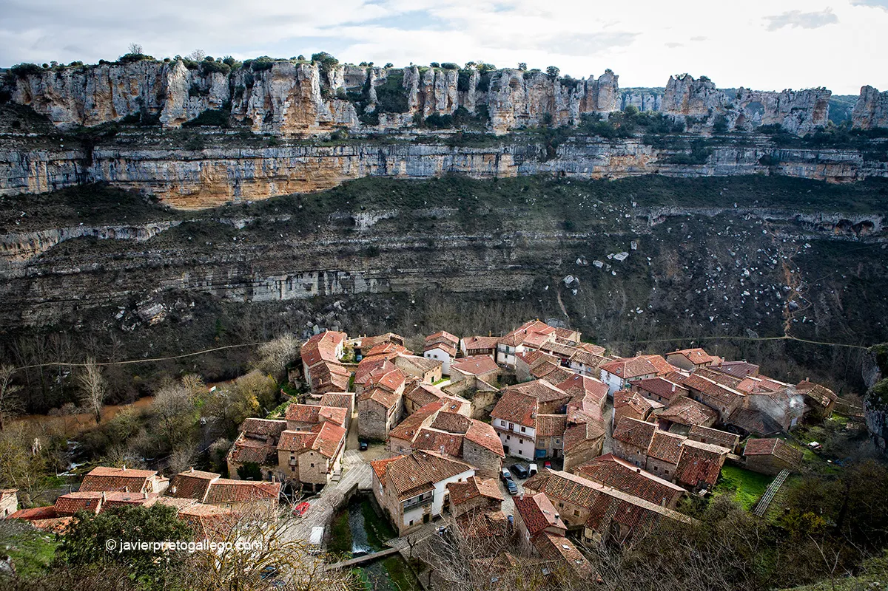
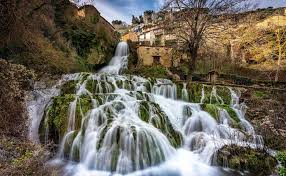

Web de turismo de Castilla y León
Orbaneja del Castillo es una joya escondida en la provincia de Burgos, Castilla y León, que combina la belleza natural con un encanto medieval.
Este pequeño pueblo, con apenas 50 habitantes, está enclavado en el Valle de Sedano y es conocido por su impresionante cascada que atraviesa el centro del pueblo, creando un paisaje de cuento de hadas.

Rutas